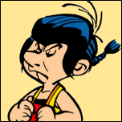
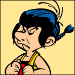

Autres personnages importants
Dans les différentes aventures d'Astérix, nous avons la chance de rencontrer plusieurs autres personnages.
Certains sont des Gaulois et proviennent d'autres villages.
Certains autres sont de d'autres nationalités.
Personnages Gaulois
- Beaufix
- On le retrouve dans Le Tour de Gaule d'Astérix
- Chef clandestin de la ville de Lugdunum (Lyon, ville de Résistance s'il en est), il apporte son aide combien précieuse aux deux compères Astérix et Obélix qui tentent d'échapper aux garnisons Romaines du Préfet Encorutilfaluquejelesus.
- Alambix
- On le retrouve dans Le Bouclier Arverne
- Accueillant et chaleureux, Alambix reçoit Astérix et Obélix chez lui. Sa femme leur prépare une bonne potée à base de choux.
- César Labeldecadix
- On le retrouve dans Le Tour de Gaule d'Astérix
- Usant de sa faconde et de sa redoutable grandiloquence, César Labeldecadix effraie à lui seul toute une garnison Romaine, permettant à Astréix et Obélix de quitter Massilia sans encombres, munis d'une bouillabaisse à emporter préparée par Eponine, l'épouse de ce César méridional.
Autres nationalités
Numérobis
On le retrouve dans Astérix et Cléopâtre .
D'après Cléopâtre, Numérobis est le meilleur architecte d'Alexandrie
Numérobis: Architecte allergique aux crocodiles, même sacrés
Profitant de la célèbre potion magique de son ami Panoramix, Numérobis tient le délai imposé par Cléopâtre pour construire un palais pour César performance ô combien rare. Pour couronner ce succès, Cléopâtre le couvrira d’or au sens propre comme au sens figuré.
Ocatarinetabellatchitchix > < &
On le retrouve dans Astérix en Corse et la Corse est "le cauchemar des Romains"!
Le fier Ocatarinetabellatchitchix s’attache à en convaincre Obélix.
Histoire d’en avoir le cœur net, Astérix et Obélix effectuent donc un voyage d’étude en Corse.
Nos Gaulois découvrent:
♠des guerres de clans,
♥le maquis où se perdent des légions romaines entières,
♠les fromages corses au parfum détonnant et
♦les cochons sauvages qui ressemblent à des sangliers domestiques.
Pépé
On le retrouve dans Astérix en Hispanie.
Qui est-il?
Enlevé par les Romains, le fils de Soupalognon y Crouton en fait voir de toutes les couleurs aux Romains mais également aux Gaulois dans Astérix en Hispanie

 
Dans le cadre du cours Développement Web I